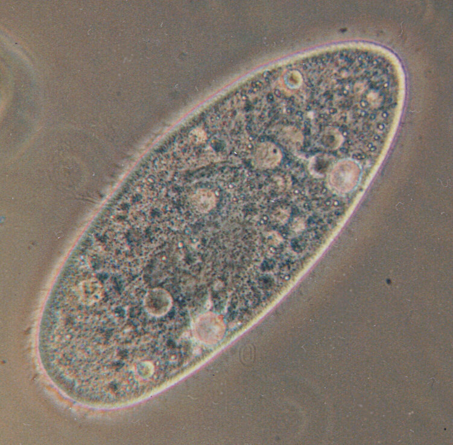
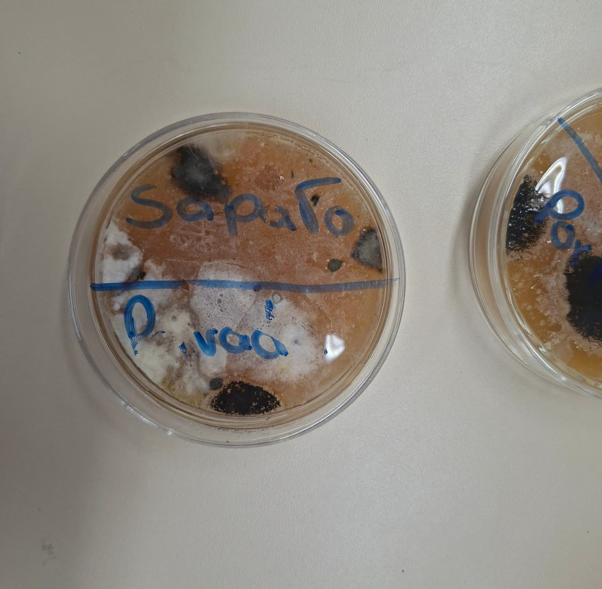

01 · Laboratório
Aulas Práticas
Prática A
Visualização de Protozoários em Meio de Cultura
📖 Introdução
Os protozoários são microrganismos eucariotos, heterotróficos e geralmente unicelulares. A diversidade de protozoários em água doce é elevada, sendo fundamentais na cadeia alimentar desses ambientes. Nessa aula, criamos protozoários em laboratório, identificamos e reconhecemos as principais estruturas adaptativas desses seres vivos.
🧪 Materiais Utilizados
📋 Procedimentos
- 01Depositar em um béquer a amostra de água retirada de um aquário para elaborar o meio de cultura.
- 02Adicionar um pedaço da folha de alface ao béquer.
- 03Cobrir o béquer com gaze, prendendo-o com um elástico. Deixar em local com temperatura ambiente e sombreado.
- 04Aguardar cerca de 7 dias. Uma película superficial sobre a água indica o desenvolvimento dos microrganismos.
- 05Elaborar três lâminas: uma com água da película superficial, uma com fragmentos do fundo do meio de cultura, e uma com pedaços da alface.
- 06Identificar cada lâmina e observar no microscópio nos aumentos de 10× e 40×.
- 07Utilizar imagens de referência para identificar os protozoários encontrados.
- 08Registrar as observações. Obs.: além de protozoários, também podem ser observados platelmintos e nematelmintos.
📷 Fotos da Prática

Protozoário observado ao microscópio óptico · Aula prática A
Resultados Observados
Após 7 dias, formou-se uma película característica na superfície do meio de cultura, indicando proliferação de microrganismos. Nas lâminas preparadas foram observados organismos unicelulares com movimentos ativos, identificados por locomoção ciliar, flagelar e por pseudópodos. A diversidade de formas entre as três lâminas foi notável.
Conclusão
A prática evidenciou que protozoários estão presentes na água e se multiplicam com facilidade em meios ricos em matéria orgânica. A observação ao microscópio confirmou sua organização celular eucariota, com estruturas como núcleo e vacúolos visíveis, além de demonstrar a importância da alface como fonte de nutrientes para o cultivo.
Prática B
Inoculação de Microrganismos em Meio de Cultura Caseiro
📖 Introdução
O cultivo de microrganismos em meios de cultura é uma técnica fundamental da microbiologia. Nessa prática, preparamos um meio de cultura caseiro à base de gelatina ou ágar, inoculamos amostras de diferentes origens (ar, superfícies, solo) e observamos o crescimento de fungos e bactérias ao longo de dias. A prática simulou, em escala simples, o trabalho realizado em laboratórios de pesquisa.
🧪 Materiais Utilizados
📋 Procedimentos
- 01Dissolver um envelope de gelatina sem sabor em 500 ml de água quente; adicionar o caldo de carne/legumes para enriquecer o meio com nutrientes.
- 02Verter a solução ainda líquida nas placas de Petri (ou recipientes plásticos) formando uma camada de cerca de 0,5 cm.
- 03Levar à geladeira por 2 a 3 horas até solidificar completamente.
- 04Identificar cada placa com etiqueta: Ar do ambiente, Superfície da mesa, Solo de jardim, Pele da mão (ou outras amostras escolhidas).
- 05Para cada placa, coletar a amostra com um cotonete (passar na superfície escolhida) e inocular no meio fazendo movimentos em zigue-zague sobre o gel.
- 06Tampar as placas imediatamente com fita adesiva ao redor para evitar contaminação extra, e armazenar em local escuro com temperatura ambiente (25–28 °C).
- 07Observar e fotografar as placas diariamente durante 5 a 7 dias, registrando o aparecimento de colônias: cor, textura, tamanho e forma.
- 08Ao final, anotar as diferenças entre as placas e identificar, se possível, se os crescimentos são de fungos (aspecto aveludado, colorido) ou bactérias (aspecto viscoso, translúcido).
📷 Fotos da Prática

Placas de cultura caseiro após 5 dias de incubação · Aula prática B

Detalhe das colônias crescidas no meio de cultura
Resultados Observados
Após 3 dias, colônias já eram visíveis nas placas inoculadas com amostras da pele e do solo — indicando alta carga microbiana nessas fontes. A placa exposta ao ar do ambiente apresentou crescimento moderado. Foram observadas colônias de cores e texturas distintas: brancas e viscosas (possivelmente bactérias), e verdes/pretas aveludadas (possivelmente fungos como Penicillium ou Aspergillus). A placa controle (sem inoculação) permaneceu limpa, confirmando a integridade do meio.
Conclusão
A prática demonstrou, de forma visual e concreta, que microrganismos estão presentes em praticamente todas as superfícies e ambientes do nosso dia a dia. A técnica de inoculação e cultivo em meio sólido caseiro é um método acessível para evidenciar a ubiquidade dos microrganismos e diferenciar, pela aparência das colônias, fungos de bactérias. Compreendemos também a importância dos meios de cultura como ferramenta da microbiologia laboratorial.